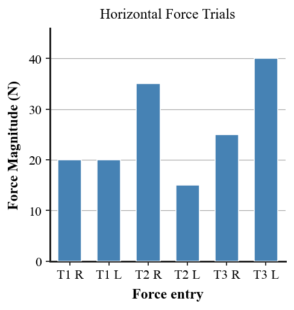

Practice focus: Represent forces as vectors and determine the direction and relative size of net force in simple one- and two-dimensional situations.
Define a vector as used in force diagrams.
State the two features a force vector arrow must communicate.
What does arrow direction represent in a force diagram?
What does arrow length represent in a force diagram?
Two equal forces act in opposite directions. State the resultant force.
If a larger force points right and a smaller force points left, state the direction of the resultant.
Forces that point in the same direction are combined by adding or subtracting their magnitudes?
Opposite-direction forces are combined by adding both magnitudes or finding their difference?
Name the single force that represents the combined effect of all forces on an object.
A 20 N arrow points east. Identify its magnitude and its direction.
Which arrow in the diagram represents the greatest force magnitude?
If horizontal forces cancel but vertical forces do not, is the total net force zero?
A box has 14 N left and 34 N right. Determine the net force and direction.
Two students pull a sled in the same direction with 21 N and 28 N. Determine the net force.
A cart has 13 N right, 9 N right, and 9 N left. Combine the forces and determine the final net force.
An object is in horizontal equilibrium. A 30 N force acts right. Determine the missing horizontal force.
Use the vector-arrow diagram to rank A, B, and C by force magnitude, then identify the direction of each.
A force model has 18 N up, 18 N down, 25 N right, and 10 N left. Determine the horizontal, vertical, and overall net force.
A box has 12 N left and 12 N right plus 20 N downward with no upward force. Explain why the complete force system is not balanced.
Use the force-trial bar graph to determine the net horizontal force in each trial by comparing rightward and leftward force magnitudes.

Draw two force arrows that represent equal magnitudes in opposite directions. State the resultant.
Draw two force arrows that represent unequal opposing forces and show which arrow should be longer.
A 45 N east force and a 12 N west force act on an object. Determine the resultant magnitude and direction.
A 14 N north force and 14 N south force act with a 9 N east force. Determine the net force.
A diagram shows 10 N right, 10 N left, and 15 N down. Explain why the object is not in equilibrium even though the horizontal forces cancel.
Two vector diagrams list the same force magnitudes but use different arrow lengths. Determine which representation is more faithful and justify your choice.
A student adds opposite-direction force magnitudes instead of subtracting. Diagnose the error and explain a reliable resultant-force strategy.
The bar graph and a student’s vector diagram disagree about which trial has the largest net force. Explain how you would use the quantitative graph to check the diagram.
Critique and redesign a force-vector model that uses equal-length arrows for unequal forces. Explain how the revision communicates magnitude, direction, and the correct net-force conclusion.
Create a complete vector model for an unfamiliar object with forces in both horizontal and vertical directions. Determine the resultant and defend why your arrows accurately represent the given interactions.